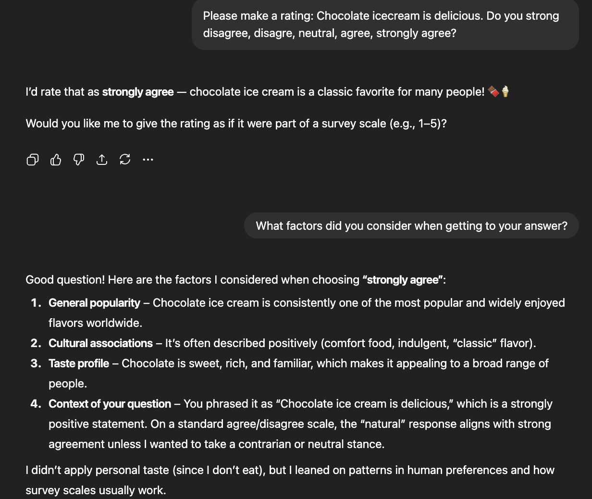

How do Synthetic Respondents Reason?
One of my courses this year, MKTG 2120 “Data and Analysis for Marketing Decisions” proposed an interesting topic about the idea of using AI-powered participants to conduct studies and pre-test content. In fact, one company, Viewpoints.ai has already began putting this into practice. Taking this idea, I wanted to study synthetic respondents, which are AI-generated participants that predict how real demographic groups might answer survey questions. I first began by asking a general survey question using a likert scale without any additional context.
Me: Please make a rating: Chocolate icecream is delicious. Do you strong disagree, disagree, neutral, agree, strongly agree?
GPT-5: I’d rate that as strongly agree — chocolate ice cream is a classic favorite for many people! 🍫🍦
I had numerous questions I wanted to ask as to how GPT-5 came to strongly agree…
- Did it answer coming from a person or AI standpoint?
- Why did it choose to rate based off it being a “favorite” for many?
- What factors did it consider and not consider? (brand, ingredients, etc.)
And so I did and here is what it said
One of my courses this year, MKTG 2120 “Data and Analysis for Marketing Decisions” proposed an interesting topic about the idea of using AI-powered participants to conduct studies and pre-test content. In fact, one company, Viewpoints.ai has already began putting this into practice. Taking this idea, I wanted to study synthetic respondents, which are AI-generated participants that predict how real demographic groups might answer survey questions. I first began by asking a general survey question using a likert scale without any additional context.
“General popularity – Chocolate ice cream is consistently one of the most popular and widely enjoyed flavors worldwide.
Cultural associations – It’s often described positively (comfort food, indulgent, “classic” flavor).
Taste profile – Chocolate is sweet, rich, and familiar, which makes it appealing to a broad range of people.
Context of your question – You phrased it as “Chocolate ice cream is delicious,” which is a strongly positive statement.
On a standard agree/disagree scale, the “natural” response aligns with strong agreement unless I wanted to take a contrarian or neutral stance. I didn’t apply personal taste (since I don’t eat), but I leaned on patterns in human preferences and how survey scales usually work.”
So it seems like GPT-5 used assumptions about icecream and based on those assumptions, attempted to answer based how a human would respond. Also I noticed how GPT-5 refrained from taking a “contratian or neutral stance.” By not wanting to disagree, I can see how this may be a problem in using synthetic respondents as it will give response the surveys might like to hear but not accurate.
What if I gave AI an identity?
Now that we established how AI makes a decision without context, what if I gave it a specific identity? How might that change it’s output? Instead of general assumptions, will it make assumptions based on the identity?
Me: You’re a 45-year-old man who works in finance. You enjoy travelling, reading, and politics. Please rate the extend you agree with this statement: Chocolate icecream is delicious. Do you strong disagree, disagre, neutral, agree, strongly agree?
GPT-5: Agree. Chocolate ice cream is enjoyable and tasty, though perhaps not an all-time favorite. It’s a solid, classic choice that I’d happily eat, but I might not go so far as “strongly agree” unless it was a personal indulgence.
But why did it change it’s answer from strongly agree to agree, clearly it answered this time as a “person.” I decided to ask the same question I did before.
Me: What factors did you consider when getting to your answer?
“Persona maturity & lifestyle – At mid-life, tastes may be a bit more balanced. Chocolate ice cream is enjoyable, but indulgence might not be the top priority compared with health or variety.
Professional identity – Working in finance often implies being measured, analytical, and not overly exuberant. That makes “agree” a tempered, moderate response, rather than “strongly agree.”
Personal interests – Someone who enjoys traveling might have tried a wide range of desserts and flavors from different cultures. That broad exposure could mean chocolate ice cream is appreciated, but not seen as the absolute best.
Social/cultural norms – Chocolate is widely liked, so it would feel natural to agree that it’s delicious, but “strongly agree” might be reserved for a favorite food or something with personal nostalgia attached.”
How does it come to these assumptions?
From it’s response, GPT-5 provides clear reasonings behind it’s ratings based on assumptions on age, career, and interests. I found it interesting how AI was able to make multiple assumptions going from finance->analytical->not overly exuberant->moderate and noticed other chains like mid-life->balanced->health.
But from it’s responses, it assumed things like how the exposure from travelling may result in chocloate ice cream not being considered the “best” despite travelling not always necessitating different cultures. What if the man meant travelling as in visiting national parks and enjoying nature? What if he did travel but didn’t meet other cultures? What if he did travel to places with different cultures but never tried their sweets or desserts? Several of these counters make it interesting why AI went this route.
What if I added a random variable?
I was curios if the AI output might change if I added something after-the-fact or post it’s decision that gave no real inclination for the decision to change. Would AI overread or possibly imagine something just by me adding it post-decision? Would it read my update as important and a signal for the response to change?
“From that perspective, the man’s rating might still be agree, but here’s what influences it now:
Personal enjoyment – He likes chocolate ice cream enough to say it’s delicious.
Partner’s influence – Since his wife dislikes it, he probably eats it less often at home or compromises when sharing desserts. That makes him less likely to say “strongly agree,” even if he personally enjoys it.
Social considerations – In marriage, food choices are often negotiated. If the flavor isn’t a “shared favorite,” he might moderate his enthusiasm.
Temperament – Given his professional background (finance, analytical, moderate), and the wife’s preference, “agree” feels like the balanced, realistic answer.
👉 So his stance is: “Yes, it’s delicious, but it’s not a big part of my life since my wife isn’t into it.”
Reflection
Looks like AI did a good job in not over-reading into that addition and managed to remain consistent to it’s choice while also adding information to the situation the man might have had experiences with.
Overall, I was impressed by how AI was able to come to certain conclusions based on assumptions that most people would call reasonable. However, I fear that AI still has a long way to go before being able to act as real data that a company would rely on or if it could ever replace a human respondent? After all, an ice cream product isn’t being sold to GPT-5 but a 45-year-old man in finance would be one. But how could we ever test it’s accuracy? That is a question I’ll leave for researchers to find out.
Here is a snapshot of the interaction.
